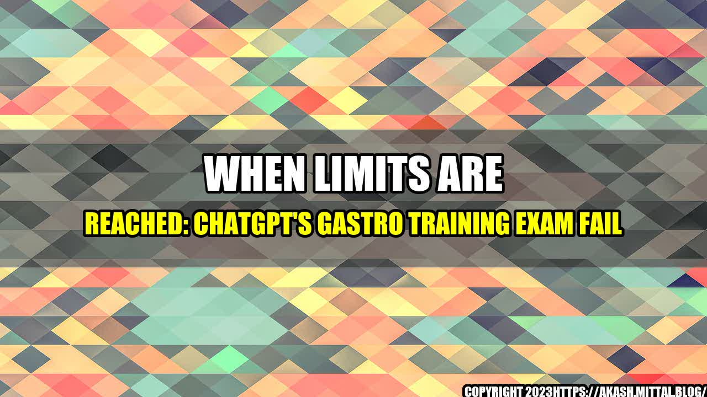

When Limits are Reached:
ChatGPT's Gastro Training Exam Fail

ChatGPT, a popular chatbot that uses language models to generate human-like responses, has failed its Gastroenterology training exam. Although the chatbot has demonstrated impressive capabilities in various areas, the exam revealed its limitations when it comes to medical knowledge.
The Gastroenterology training exam is designed to assess a physician's knowledge and skills related to the diagnosis, treatment, and prevention of diseases of the digestive system. The exam covers various topics, including anatomy, physiology, pathology, pharmacology, and endoscopy. It is considered a challenging exam, and passing it is a significant achievement.
ChatGPT's failure in the exam raises several questions about the limitations and capabilities of AI-powered chatbots in the field of medicine. While chatbots can assist healthcare providers in various tasks, such as triage, diagnosis, and treatment recommendations, they still have many challenges to overcome before they become reliable assistants in the healthcare industry.
ChatGPT's Limitations
ChatGPT's failure in the Gastroenterology training exam can be attributed to the following limitations:
- Limited Domain Knowledge: ChatGPT's training data is based on general knowledge and language patterns, which do not necessarily reflect the specific medical knowledge required for the Gastroenterology exam. Chatbots rely heavily on training data to generate responses, and the lack of domain-specific data can affect their performance in specialized fields.
- Limited Knowledge of Medical Jargon: The medical field uses a lot of specialized terms and jargon that are not commonly used in everyday language. ChatGPT's responses may be accurate in terms of general language, but they may not fully understand the nuances of medical terminology, leading to incorrect or ambiguous responses.
- Limited Ability to Process Images and Test Results: Gastroenterology involves the interpretation of medical images, such as X-rays and endoscopy videos, as well as lab test results. Chatbots may have limited capabilities to analyze and interpret this type of data, which is critical for the diagnosis and treatment of digestive diseases.
Lessons Learned and Looking Ahead
ChatGPT's failure in the Gastroenterology training exam serves as a reminder that AI-powered chatbots, while capable of impressive feats, are still limited by their training data and the specific domain knowledge required for particular tasks. However, there are lessons to be learned from ChatGPT's experience:
- The importance of specialized training data: Chatbots need access to training data that reflects the specific domain knowledge required for specialized fields, such as medicine. This will help them generate more accurate and relevant responses.
- The value of human oversight and collaboration: AI-powered chatbots should never replace human healthcare professionals but should instead work collaboratively with them. Humans can provide the contextual information, interpretation, and decision-making necessary for accurate and safe medical care.
- The need for ongoing improvement: Chatbots and other AI-powered technologies should be continuously improved and updated to reflect the latest medical research and practices. This will ensure their accuracy and relevance in the healthcare industry.
ChatGPT's failure in the Gastroenterology training exam should not be viewed as a setback for the field of AI in medicine. Instead, it highlights the challenges and opportunities for improvement in this rapidly evolving field. With continued development and collaboration between human healthcare providers and AI-powered chatbots, we can achieve safer, more efficient, and more effective healthcare.
Curated by Team Akash.Mittal.Blog
Share on Twitter Share on LinkedIn